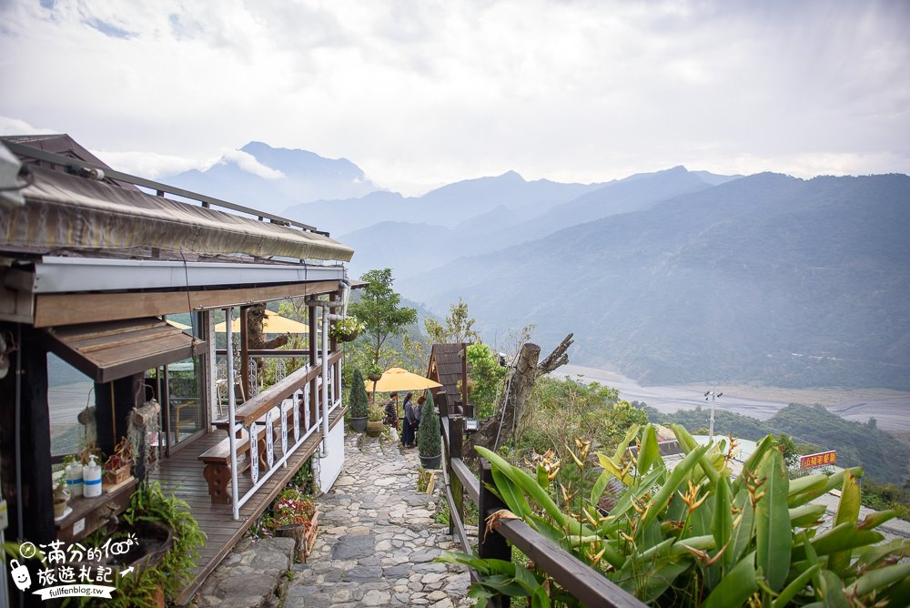
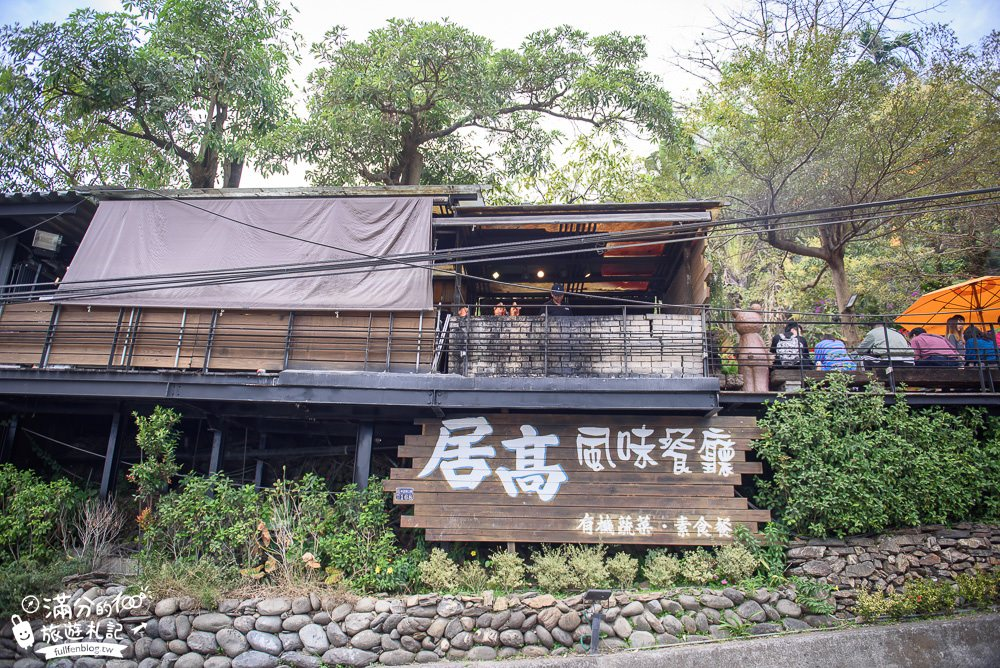
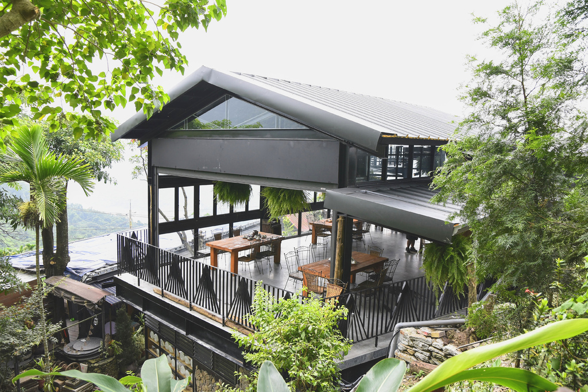

清靜莊園
清靜莊園環境
莊園中有原始的自然環境，園區內有兩個用餐的地方，中間有一棟室內的用餐區，環境十分優美
隱身在綠意盎然的山林之中置身清靜莊園，可飽覽遼闊的壯麗山景，想要遠離塵囂，三地門清靜莊園也是個好地方 聽說黃昏和夜間景觀更是浪漫迷人也是情侶出遊熱愛的約會小基地呢

清靜莊園景觀餐廳
館內提供精緻鍋物、輕食咖啡和下午茶點唯美的山中小屋，彷彿置身在異國花園在清靜莊園賞景下午茶好放鬆
提供的餐飲有各式咖啡，茶飲，果汁氣泡水，點心有炸物，也有漢堡。還滿多人來享用火鍋的

三地門鄉最高的咖啡廳
想遠離城市中的塵囂，享受愜意下午茶嗎? 來這絕對是您最佳去處!
這裡有一望無際的山巒景緻，置身於山中呼吸清新空氣，你可以好友一群，肆無 忌憚地談天說地，也可以找個適合你的位置，獨享這片寧靜的山林，喝著當地咖啡 以及精緻手作餐點，細細品嚐山中慢活...
